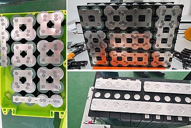
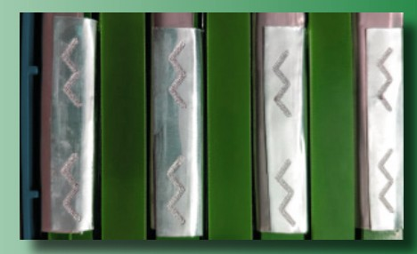
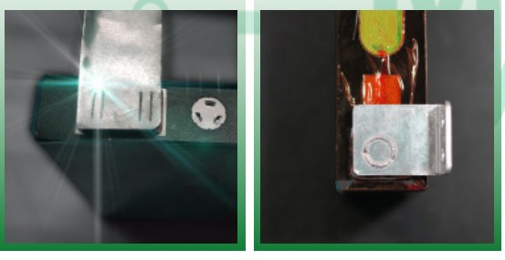
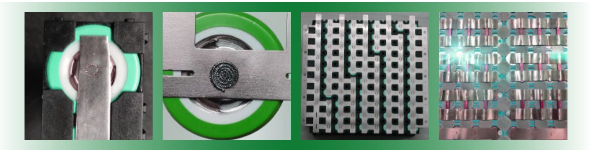
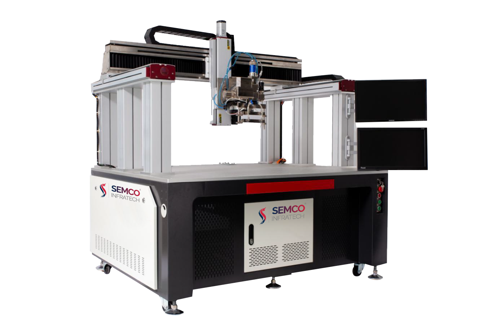

Introduction
Laser welding machines have become increasingly popular in the battery industry due to their ability to weld with high precision and efficiency. They are commonly used for welding battery cells, busbars, and tabs in the battery pack assembly process.
One of the key advantages of laser welding machines in the battery industry is their ability to weld dissimilar materials. This is particularly important in battery manufacturing, where different materials are often used in the construction of battery cells and packs. Laser welding can effectively join these materials without compromising the quality or durability of the weld.
Laser welding machines also offer other benefits such as minimal distortion and low heat input, which can reduce the need for post-welding machining and improve overall efficiency. Additionally, laser welding is a clean process that does not require additional welding materials, making it an environmentally friendly option.
Overall, the use of laser welding machines in the battery industry has allowed manufacturers to improve the quality and efficiency of their welding processes, leading to better-performing and more reliable battery products.
Principles of Laser Welding Machine

Laser welding machines work on the principle of using a focused beam of high-intensity light to heat up and melt the material being welded. The laser beam is generated by a laser source and is directed through a series of mirrors and lenses to focus it into a small, precise spot.
The laser beam heats up the material to its melting point, causing it to fuse with the other material being welded. The heat from the laser beam is so intense that it creates a localized pool of molten material, which solidifies as the laser moves along the joint.
The process of laser welding is controlled by a computer that uses complex algorithms to ensure precise control of the laser beam. The computer controls the power of the laser, the duration of the beam, and the location of the beam on the material.
One of the most important principles of laser welding is the need for precise alignment of the materials being welded. Laser welding requires very tight tolerances, and any misalignment can result in a weak or faulty weld.
Another key principle of laser welding is the need for a clean surface. Any contaminants, such as oil or grease, on the surface of the material can interfere with the welding process and result in a weak weld.
Overall, the principles of laser welding rely on precise control of the laser beam and strict attention to detail in the alignment and preparation of the materials being welded. This allows for highly precise and efficient welding, making laser welding an attractive option for a range of industrial applications.
But,
Why Laser Welding Machines are required?
Laser welding machines are essential in the battery industry due to the unique welding challenges presented by battery cell and pack assembly. One of the main reasons why laser welding machines are required is their ability to weld dissimilar materials with high precision and efficiency. This is particularly important in battery manufacturing, where different materials are often used in the construction of battery cells and packs.

Another reason why laser welding machines are necessary in the battery industry is their ability to produce high-quality welds with minimal distortion and low heat input. This reduces the need for post-welding machining and improves overall efficiency, which is crucial in high-volume battery production.
Furthermore, laser welding is a clean process that does not require additional welding materials, making it an environmentally friendly option. This is an important consideration in the battery industry, where sustainability is a key focus.
Laser welding machines are required in the battery industry due to their ability to weld dissimilar materials with high precision and efficiency, produce high-quality welds with minimal distortion and low heat input, and offer a clean and environmentally friendly option for welding. The use of laser welding machines has helped to improve the quality, reliability, and efficiency of battery production, making them an essential tool in the industry.

After understanding the requirements, you might be thinking what are its benefits then below information will help you,
Laser welding machines offer numerous benefits in the battery industry. One of the key advantages is their ability to weld dissimilar materials, which is critical in battery manufacturing where different materials are often used. Laser welding also produces high-quality welds with minimal distortion and low heat input, reducing the need for post-welding machining and improving overall efficiency. Additionally, laser welding is a clean process that does not require additional welding materials, making it an environmentally friendly option. Overall, the use of laser welding machines has helped to improve the quality, reliability, and efficiency of battery production, making them an indispensable tool in the industry.

After knowing the benefits, you might be thinking of purchasing one machine for your battery plant. But one question would be troubling you that among all these brands who claim to be the best which one is actually best. So, we have done that work for you. The most trusted brand in the Indian battery industry that has been supplying automated battery solutions for three decades. Yes, you are right.
Semco
Semco is a leader in supplying lithium-ion battery testing and assembly equipment. It has enthralled its customers with various customized solutions. One such product that Semco offers is the Laser Welding Machine that offers high quality and multifunctional approach for welding the batteries. Talking about this highly automated and customised machine here are some key features.
Semco Laser Welding Machine
Semco Laser welding machine is a cutting-edge machine that comes in various ranges, including SEMCO SI LW 1000/1500/2000/3000/4000/6000W. The machine uses laser technology to perform welding tasks, providing high precision and speed. The machine comes with a conveyor system that enables continuous and automated welding operations, enhancing productivity. The machine also has an alarm function and automatic inspection, ensuring safety and high-quality welding. The automatic inspection function enables the machine to detect and correct errors during the welding process, minimizing defects in the final product. Overall, Semco Laser welding machine is a reliable and efficient machine that is ideal for various industrial applications that require high precision and speed.

Got the solution to your welding worries then what are you waiting for book a live demo and operate your battery plant without any hassles and tensions. If you liked our newsletter then do not forget to share and comment and stay tuned for our next Newsletter on “BMS Tester”. Till then “Happy Batteries”.